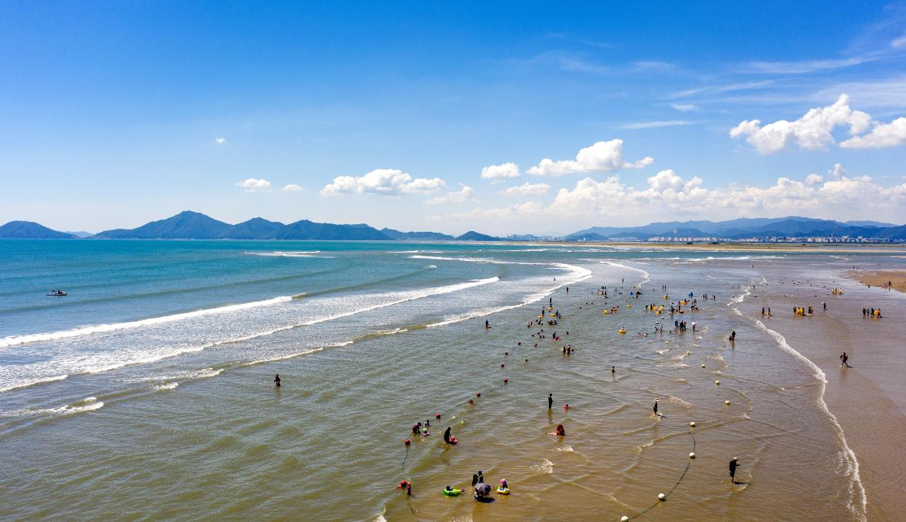

웨이브시티부산
도심 속에서 즐기는
서핑 라이프

임랑해수욕장
부산광역시 기장군 장안읍
임랑리에 위치한 해수욕장

송정해수욕장
부산광역시 해운대구 송정동
서퍼들이 사랑하는 부산 최고의 서핑성지

해운대해수욕장
부산광역시 해운대구 중동
최고의 해변에서 즐기는
최고의 파도
광안리해수욕장
부산광역시 수영구 광안2동
평소 물이 잔잔하지만,
파도가 칠 때는 양질의 파도로 인기 만점

다대포해수욕장
부산광역시 사하구 다대동
드넓은 해변과 얕은 수심
안전한 모래바닥